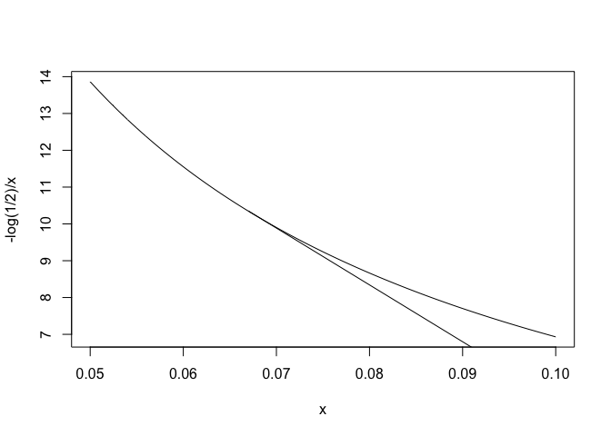
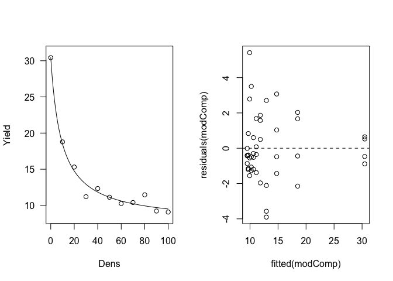

Capitolo 12 Modelli lineari con più variabili indipendenti
12.1 Introduzione
Nel capitolo precedente abbiamo visto come è possibile costruire modelli nei quali abbiamo una sola variabile dipendente quantitativa e una variabile indipendente categorica. Abbiamo anche visto che questo tipo di modelli lineari sono normalmente noti come modelli ‘ANOVA’. Ovviamente è possibile definire modelli analoghi, ma più complessi, caratterizzati da più di una variabile indipendente categorica, con i quali è possibile descrivere i risultati di esperimenti multi-fattoriali. Vediamo ora alcuni esempi
12.2 ANOVA a blocchi randomizzati
Abbiamo una prova di confronto tra erbicidi in mais, con 13 formulati, due testimoni inerbiti (che, per comodità, considereremo due trattamenti diversi) e un testimone scerbato. Date le dimensioni della prova, è lecito ipotizzare che, pur scegliendo un appezzamento il più omogeneo possibile, ci potrebbero essere differenze di infestazione tra un punto e l’altro del campo, con un presumibile gradiente procedendo dai lati (vicino alle fosse) verso il centro. In questa situazione, se l’esperimento fosse disegnato a randomizzazione completa, le differenze di infestazione tra una parte e l’altra del campo sarebbero trascurate e finirebbero per incrementare l’errore sperimentale, diminuendo l’efficienza dell’esperimento.
Si impiega quindi un disegno a blocchi randomizzati con quattro repliche. Ricordiamo che, con questo disegno, il campo è suddiviso in tante sezioni (dette blocchi) quante sono le repliche (quattro), perpendicolarmente al gradiente di infestazione trasversale. In questo modo, l’ambiente è relativamente omogeneo all’interno di ciascun blocco nel quale si è collocata una replica per trattamento.
Il dataset dei risultati (‘rimsulfuron’) è contenuto nel package ‘aomisc’; consideriamo come variabile risposta la produzione (‘Yield’).
library(aomisc)
library(reshape)
data(rimsulfuron)La produzione di ogni unità sperimentale (parcella) è condizionata da più di un effetto:
- il diserbante con cui essa è stata trattata;
- il blocco di cui essa fa parte;
- ogni altro effetto non conoscibile e puramente casuale.
Il modello è quindi:
\[ Y_{ij} = \mu + \gamma_i + \alpha_j + \varepsilon_{ij}\]
dove \(Y\) è la produzione nel blocco \(i\) e con il diserbo \(j\), \(\mu\) è l’intercetta, \(\gamma\) è l’effetto del blocco \(i\), \(\alpha\) è l’effetto del trattamento \(j\) e \(\varepsilon\) è l’errore sperimentale per ogni singola parcella, che si assume normalmente distribuito, con media 0 e deviazione standard \(\sigma\). Per gli usuali problemi di stimabilità, poniamo i vincoli \(\gamma_1 = 0\) e \(\alpha_1 = 0\) (vincolo sul trattamento), in modo che \(\mu\) rappresenta il valore atteso nel primo blocco e per il primo trattamento in ordine alfabetico. In totale, vi sono 19 parametri da stimare, più \(\sigma\).
La stima dei parametri viene eseguita con il metodo dei minimi quadrati. Per motivi didattici, costruiamo il modello in modo incrementale, inserendo gli effetti uno alla volta nel modello. Il primo modello è quindi quello che contiene la sola intercetta e il residuo:
mod1 <- lm(Yield ~ 1, data = rimsulfuron)
RSS1 <- sum( residuals(mod1)^2 )
RSS1## [1] 53779.07Di questo modello, calcoliamo la somma dei quadrati dei residui (devianza del residuo), che è visibile più sopra.
In seconda battuta, inseriamo l’effetto blocco:
mod2 <- lm(Yield ~ factor(Block), data = rimsulfuron)
RSS2 <- sum( residuals(mod2)^2 )
RSS2## [1] 51118.58Vediamo che la devianza del residuo è calata di RSS1 - RSS2 unità, che corrispondono all’effetto del blocco e alla sua introduzione nel modello.
Infine, inseriamo anche l’effetto del trattamento:
mod3 <- lm(Yield ~ factor(Block) + factor(Code),
data = rimsulfuron)
RSS3 <- sum( residuals(mod3)^2 )
RSS3## [1] 7187.348L’inserimento di quest’ultimo effetto ha determinato un calo della devianza del residuo pari RSS2 - RSS3, che corrisponde appunto all’effetto del diserbo. Insomma, ogni effetto introdotto nel modello ha determinato un decremento della variabilità non spiegata, quantitativamente pari alla variabilità attribuibile all’effetto stesso. Alla fine del processo rimane comunque un certo residuo (RSS3) non spiegato, cioè \(\varepsilon\).
Ci chiediamo se gli effetti attribuibili al blocco e al trattamento sono significativamente più grandi del residuo. Sappiamo già di non poter confrontare le devianze, ma possiamo calcolare e confrontare con un test di F le relative varianze. Basta tener conto che i gradi di libertà dei blocchi e dei trattamenti sono rispettivamente 3 e 15, cioè il numero dei blocchi meno uno e il numero dei trattamenti meno uno.
La tabella ANOVA può essere facilmente ottenuta con R:
anova(mod3)## Analysis of Variance Table
##
## Response: Yield
## Df Sum Sq Mean Sq F value Pr(>F)
## factor(Block) 3 2660 886.83 5.5524 0.002496 **
## factor(Code) 15 43931 2928.75 18.3369 2.329e-14 ***
## Residuals 45 7187 159.72
## ---
## Signif. codes: 0 '***' 0.001 '**' 0.01 '*' 0.05 '.' 0.1 ' ' 1Ovviamente, prima di considerare questa tabella dovremo preoccuparci del fatto che le assunzioni di base siano rispettate, cosa che possiamo facilmente verificare con un’analisi grafica dei residui.
par(mfrow=c(1,2))
plot(mod3, which = 1)
plot(mod3, which = 2)
Dopo esserci rassicurati su questo importante aspetto, possiamo vedere che abbiamo due ipotesi nulle da testare (effetto del trattamento non significativo ed effetto del blocco non significativo), che possono essere entrambe rifiutate per P < 0.05.
12.3 ANOVA a quadrato latino
Immaginiamo di voler studiare il tempo necessario per costruire un componente elettronico, utilizzando quattro metodi diversi. E’ evidente che il tempo di costruzione sarà influenzato dalla perizia del tecnico e, per questo, utilizziamo quattro tecnici diversi, ad ognuno dei quali facciamo utilizzare tutti e quattro i metodi. Un esperimento così disegnato sarebbe a blocchi randomizzati, con il tecnico che fa da blocco per i trattamenti. Tuttavia, dobbiamo anche riconoscere che i quattro tecnici saranno via via meno efficienti, e quindi il metodo che utilizzeranno per primo sarà avvantaggiato, mentre quello che utilizzeranno per ultimo sarà svantaggiato. E’vero che i metodi sono assegnati in ordine random ad ogni tecnico, ma non si può comunque evitare che un metodo venga avvantaggiato rispetto ad un altro, perché, ad esempio, non viene mai ad occupare l’ultima posizione (o meglio, l’ultimo turno).
Per evitare questo problema imponiamo un vincolo ulteriore alla randizzazione e facciamo in modo che ogni metodo occupi tutte e quattro i turni, in tecnici diversi. Il disegno è quindi a quadrato latino.
Il dataset dei risultati è disponibile su gitHub:
dataset <- read.csv("https://raw.githubusercontent.com/OnofriAndreaPG/aomisc/master/data/Technicians.csv", header=T)
dataset## Shift Technician Method Time
## 1 I Andrew C 90
## 2 II Andrew B 90
## 3 III Andrew A 89
## 4 IV Andrew D 104
## 5 I Anna D 96
## 6 II Anna C 91
## 7 III Anna B 97
## 8 IV Anna A 100
## 9 I Michael A 84
## 10 II Michael D 96
## 11 III Michael C 98
## 12 IV Michael B 104
## 13 I Sarah B 88
## 14 II Sarah A 88
## 15 III Sarah D 98
## 16 IV Sarah C 106In questo caso abbiamo un trattamento (metodo) e due effetti ‘blocco’ (tecnico e turno), che debbono tutti essere inclusi nel modello, che può essere così definito:
\[Y_{ijk} = \mu + \gamma_k + \beta_j + \alpha_i + \varepsilon_{ijk}\]
dove \(\mu\) è l’intercetta, \(\gamma\) è l’effetto del turno k, \(\beta\) è l’effetto del tecnico j e \(\alpha\) è l’effetto del metodo i. L’elemento \(\varepsilon_{ijk}\) rappresenta la componente random individuale, di ogni osservazione e si assume normalmente distribuita, con media 0 e deviazione standard \(\sigma\).
Avendo già illustrato il processo di sviluppo incrementale del modello e quindi utilizziamo subito R e il metodo dei minimi quadrati per la stima dei parametri:
mod <- lm(Time ~ Method + Technician
+ Shift, data = dataset)Verifichiamo il rispetto delle assunzioni di base, con l’analisi grafica dei residui.
par(mfrow=c(1,2))
plot(mod, which = 1)
plot(mod, which = 2)
Non essendovi evidenti problemi, valutiamo la significatività degli effetti nel modello, analogamente a quanto abbiamo fatto nel caso dell’ANOVA a blocchi randomizzati. L’unica differenza sta nel fatto che, nei disegni a quadrato latino, vi sono tre effetti da testare, anche se l’unico ad avere una certa rilevanza è l’effetto del metodo di lavoro.
anova(mod)## Analysis of Variance Table
##
## Response: Time
## Df Sum Sq Mean Sq F value Pr(>F)
## Method 3 145.69 48.563 12.7377 0.0051808 **
## Technician 3 17.19 5.729 1.5027 0.3065491
## Shift 3 467.19 155.729 40.8470 0.0002185 ***
## Residuals 6 22.87 3.812
## ---
## Signif. codes: 0 '***' 0.001 '**' 0.01 '*' 0.05 '.' 0.1 ' ' 1Vediamo che esiste una differenza significativa tra i metodi e l’ipotesi nulla può essere rifiutata con una bassissima probabilità di errore di prima specie.